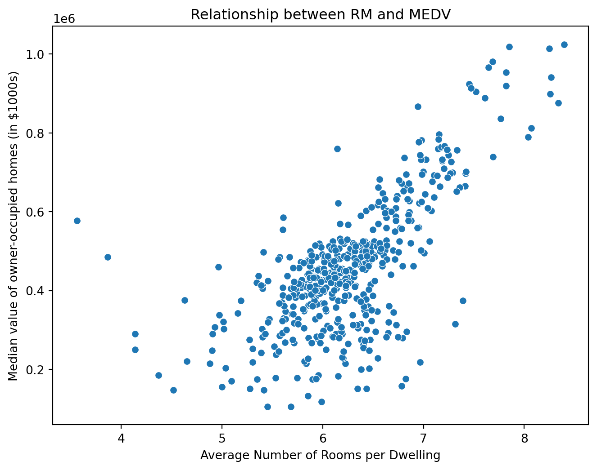

import pandas as pd
import numpy as np
import matplotlib.pyplot as plt
import seaborn as sns
from sklearn.model_selection import train_test_split
from sklearn.linear_model import LinearRegression
from sklearn.preprocessing import PolynomialFeatures
from sklearn.metrics import mean_squared_error, r2_scoreLet’s talk about something about linear and nonlinear regression in this blog.
Linear Regression
Linear regression is a statistical method used to model the relationship between a dependent variable and one or more independent variables by fitting a linear equation to the observed data.
The dependent variables are what we’re trying to predict or understand. It’s like the “outcome” and is usually on the vertical axis (y-axis) of the graph.
The independent variables are the factors we think might affect the outcome. They are on the horizontal axis (x-axis).
Equation: The equation of a linear regression model is typically in the form of \(y = ax + b\), where:
\(y\) is the dependent variable we’re trying to predict.
\(x\) is the independent variableweu’re using for prediction
\(a\) is the y-intercept (the value of \(y\) when \(x\) is 0).
\(b\) is the slope of the line, which represents the change in \(y\) for a one-unit change in \(x\).
Use case: It’s widely used in situations where the relationship between variables is approximately linear, like predicting house prices based on size, predicting salaries based on experience, etc.
Nonlinear Regression
Nonlinear regression, on the other hand, is used when the data shows a more complex relationship that cannot be accurately described by a straight line. In nonlinear regression:
- Complex Relationship: The relationship between the independent and dependent variables is modeled as a nonlinear function. This means the graph of the data points does not form a straight line but could take various shapes (like curves).
- Equation: The equation can take many forms, depending on the nature of the relationship and the data. For example, it could be a polynomial (like \(y = ax^2 + bx + c\)), exponential or logistic function.
- Use Cases: Nonlinear regression is used in more complex scenarios where the effect of the independent variables on the dependent variable changes in a non-uniform way. Examples include growth rates of organisms, chemical reaction rates, and market saturation models.
Summary
In summary, linear regression is used for simpler, straight-line relationships, while nonlinear regression is applied to model more complex, curved relationships in data. The choice between the two depends on the nature of the data and the underlying relationship we’re trying to model.
Task Demo
For the linear and nonlinear regression task, I’d like to predict house prices. I use the Boston Housing dataset from Kaggle.
Let me import libraries and load the data.
df = pd.read_csv('datasets/housing.csv')
df.head()| RM | LSTAT | PTRATIO | MEDV | |
|---|---|---|---|---|
| 0 | 6.575 | 4.98 | 15.3 | 504000.0 |
| 1 | 6.421 | 9.14 | 17.8 | 453600.0 |
| 2 | 7.185 | 4.03 | 17.8 | 728700.0 |
| 3 | 6.998 | 2.94 | 18.7 | 701400.0 |
| 4 | 7.147 | 5.33 | 18.7 | 760200.0 |
In this dataset, MEDV stands for “Median value of owner-occupied homes in $1000’s”. Essentially, it represents the median value of houses in various areas of Boston, with the values given in thousands of dollars.
RM stands for “the average number of rooms per dwelling”.
LSTAT stands for “percentage of lower status of the population”. In the context of the dataset, a higher LSTAT value is often associated with lower median values of homes (MEDV), as it indicates a higher proportion of lower-income residents in the area.
PTRATIO stands for “pupil-teacher ratio by town”. It represents the ratio of students to teachers in primary and secondary schools in the neighborhood. A lower PTRATIO might indicate better education resources (i.e., more teachers per student) and is often considered a desirable feature in a residential area.
# Plotting the distribution of MEDV (Median value of owner-occupied homes)
plt.figure(figsize=(8, 6))
sns.histplot(df['MEDV'], bins=30, kde=True)
plt.title('Distribution of MEDV')
plt.xlabel('Median value of owner-occupied homes (in $1000s)')
plt.ylabel('Frequency')
plt.show()According to the plot, most of the medv distribution is around 0.4~0.5, that is, 40,000k to 50,000k.
Let’s have a look on how the different variables impact the y value.
# Scatter plot of RM (average number of rooms per dwelling) vs MEDV
plt.figure(figsize=(8, 6))
sns.scatterplot(x='RM', y='MEDV', data=df)
plt.title('Relationship between RM and MEDV')
plt.xlabel('Average Number of Rooms per Dwelling')
plt.ylabel('Median value of owner-occupied homes (in $1000s)')
plt.show()
This image shows that RM and MEDV seem to be in direct proportion to each other.
# Scatter plot of LSTAT (average number of rooms per dwelling) vs MEDV
plt.figure(figsize=(8, 6))
sns.scatterplot(x='LSTAT', y='MEDV', data=df)
plt.title('Relationship between LSTAT and MEDV')
plt.xlabel('Percentage of Lower Status of the Population')
plt.ylabel('Median value of owner-occupied homes (in $1000s)')
plt.show()This image shows that LSTAT and MEDV seem to be inversely proportional.
# Scatter plot of PTRATIO (average number of rooms per dwelling) vs MEDV
plt.figure(figsize=(8, 6))
sns.scatterplot(x='PTRATIO', y='MEDV', data=df)
plt.title('Relationship between PTRATIO and MEDV')
plt.xlabel('Pupil-teacher Ratio by Town')
plt.ylabel('Median value of owner-occupied homes (in $1000s)')
plt.show()It doesn’t look like there’s a linear relationship between PTRATIO and MEDV.
# Correlation matrix heatmap
plt.figure(figsize=(12, 10))
sns.heatmap(df.corr(), annot=True, cmap='coolwarm')
plt.title('Correlation Matrix')
plt.show()The correlation matrix indicates that MEDV has a stronger correlation with RM.
Linear Regression
Let’s train our linear regression model and select RM and MEDV for linear regression.
X = df[['RM']]
y = df['MEDV']
# Split the dataset into training and testing sets
X_train, X_test, y_train, y_test = train_test_split(X, y, test_size=0.2, random_state=42)
# Initialize the Linear Regression model
lr = LinearRegression()
# Train the model
lr.fit(X_train, y_train)LinearRegression()In a Jupyter environment, please rerun this cell to show the HTML representation or trust the notebook.
On GitHub, the HTML representation is unable to render, please try loading this page with nbviewer.org.
LinearRegression()
# Make predictions
y_pred = lr.predict(X_test)
# Evaluate the model
mse = mean_squared_error(y_test, y_pred)
print(f"Mean Squared Error: {mse}")
# Display coefficients
print("Coefficients:", lr.coef_)Mean Squared Error: 13362423686.16902
Coefficients: [176526.28588093]# Predictions for the line
df['Predictions'] = lr.predict(X)
# Scatter plot with regression line
plt.figure(figsize=(10, 6))
sns.scatterplot(x='RM', y='MEDV', data=df, label='Data')
sns.lineplot(x='RM', y='Predictions', data=df, color='red', label='Regression Line')
plt.title('Linear Regression Line on RM vs MEDV')
plt.xlabel('Average Number of Rooms per Dwelling (RM)')
plt.ylabel('Median value of owner-occupied homes (MEDV)')
plt.legend()
plt.show()The linear model demonstrates a not bad fit.
Nonlinear Regression
We notice that LSTAT and MEDV seem to be inversely proportional. Therefore, let’s select LSTAT and MEDV for nonlinear regression analysis.
# Selecting RM and MEDV for regression
X = df[['LSTAT']]
y = df['MEDV']
# Transforming X to 1/X
X_transformed = 1 / X
# Fit the linear regression model on the transformed data
nlr = LinearRegression()
nlr.fit(X_transformed, y)LinearRegression()In a Jupyter environment, please rerun this cell to show the HTML representation or trust the notebook.
On GitHub, the HTML representation is unable to render, please try loading this page with nbviewer.org.
LinearRegression()
# Predictions
X_range = np.linspace(X.min(), X.max(), 100)
y_pred = nlr.predict(1 / X_range)
# Scatter plot with regression line
plt.figure(figsize=(10, 6))
sns.scatterplot(x='LSTAT', y='MEDV', data=df, label='Data')
plt.plot(X_range, y_pred, color='red', label='Inverse Regression Line')
plt.title('Inverse Regression (1/LSTAT vs MEDV)')
plt.xlabel('Percentage of Lower Status of the Population (LSTAT)')
plt.ylabel('Median value of owner-occupied homes (MEDV)')
plt.legend()
plt.show()
# Model evaluation
y_pred_train = nlr.predict(X_transformed)
mse = mean_squared_error(y, y_pred_train)
r2 = r2_score(y, y_pred_train)
print(f"Mean Squared Error: {mse}")
print(f"R^2 Score: {r2}")Mean Squared Error: 10081897997.112593
R^2 Score: 0.6304493154356112The nonlinear model exhibits a rather good fit.